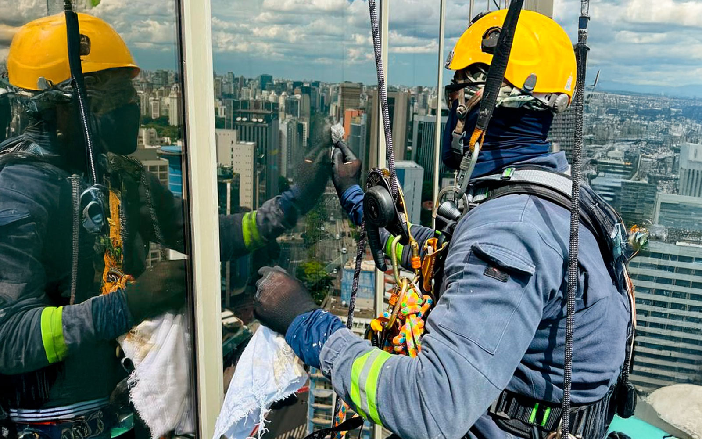

A Evolution Alpinismo Industrial oferece soluções de revestimentos protetivos que maximizam a durabilidade e valorizam suas estruturas, protegendo-as contra intempéries, corrosão e desgaste natural.
Avaliação técnica detalhada para garantir a segurança e longevidade de seu patrimônio.

A inspeção estrutural em altura é um serviço fundamental para a segurança e a manutenção preventiva de edifícios, pontes, torres e outras infraestruturas em São Paulo. A Evolution Alpinismo Industrial oferece avaliações técnicas detalhadas, utilizando o alpinismo industrial para acessar com precisão e segurança todos os pontos críticos da estrutura, mesmo os de difícil alcance.
Nossa equipe de engenheiros e técnicos especializados identifica patologias, fissuras, corrosão, desgastes e outros problemas que podem comprometer a integridade da estrutura. Com base nessa análise, emitimos laudos técnicos completos, que servem como base para planos de manutenção e reparos, garantindo a conformidade com as normas de segurança e a longevidade do seu patrimônio.
Identificamos com exatidão problemas estruturais, mesmo os menos visíveis, para um plano de ação eficaz.
Fornecemos relatórios completos com fotos, análises e recomendações para a manutenção e segurança da estrutura.
Nossas inspeções são realizadas com os mais altos padrões de segurança, minimizando riscos para a equipe e para o local.
Contamos com engenheiros e alpinistas industriais qualificados para uma avaliação completa e confiável.
A inspeção estrutural em São Paulo é um investimento na segurança e na valorização do seu imóvel. Conte com a Evolution Alpinismo Industrial para uma avaliação técnica de excelência, que protege seu patrimônio e garante a tranquilidade de todos.

Nossa metodologia de trabalho oferece vantagens únicas:
Soluções seguras e inovadoras para serviços em altura.
Entre em ContatoRespostas para as perguntas mais comuns sobre nosso serviço de inspeção estrutural em São Paulo.